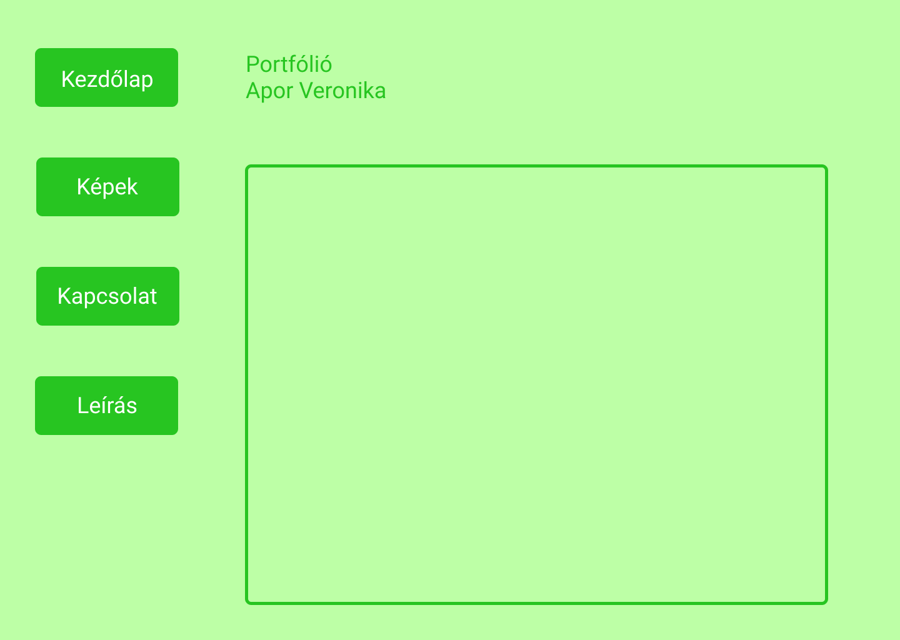

A tervrajz:

A tervezésnél kedvenc színem állt a középpontban, ezen kívül egy minimalista, letisztult stílusra törekedtem. A rajzot a Figma alkalmazással készítettem.
Habár gimnáziumban, a nyelvi előkészítő évfolyamban programoztam html-ben, az elég régen volt, így majdnem teljesen az elejéről kellett kezdenem. Mindent az internetről tanultam.
A kivitelezés legnehezebb része a képek rácsba rendezése volt. Az eredeti ötlettől annyiban tértem el, hogy idő hiányában függőleges menüsor helyett vízszinteset csináltam, és kevesebb képet tudtam összegyűjteni, mint szerettem volna.
Felhasznált oldalak:
W3Schools
Figma
Youtube:
https://www.youtube.com/watch?v=8lvc-DhWst8&list=PLYiFuPu36je2kcaSlieHrYWYXvmZtW2Ws&index=4